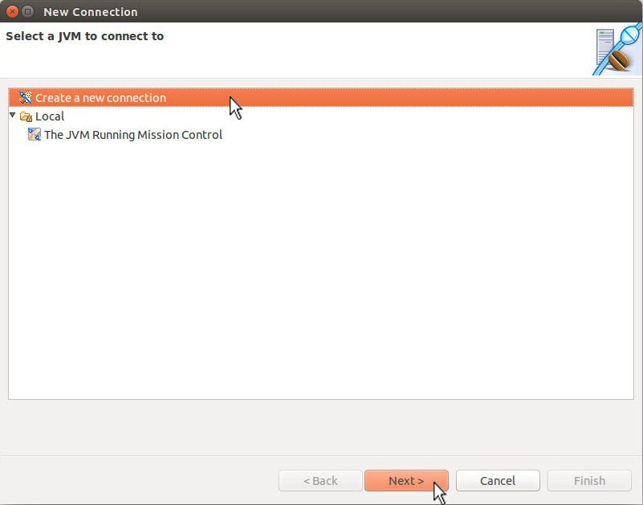
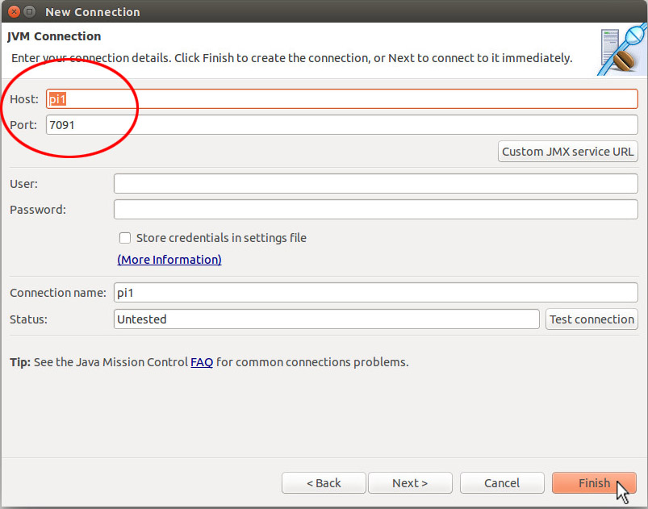

You can google around to search for how this framework can be configured to monitor remote JVMs, and nearly all of the reference material will help you get up to speed quickly. However, you'll find that these examples favor simplicity over security. They generally disable authentication and encryption leaving the remote application vulnerable to anyone who knows or can guess its host name and port number. In the real world, if you wanted to monitor a production application remotely, you'd need to carefully consider the security ramifications.
Not finding much in the way of instruction here, we thought it might be helpful to document, by example, how a sample remote Java application can be more securely instrumented and managed with Java Flight Recorder and Java Mission Control. What follows are the steps necessary to enable monitoring over a connection that is secured using Secure Sockets Layer (SSL).
For the remainder of this article, we'll refer to the
instrumented JVM as the remote side of the solution.
To demonstrate the ubiquity of the Java SE platform, our remote
JVM will actually reside on a Raspberry Pi. As
Java SE and Java SE Embedded runtime environments both now bundle
the Java Flight Recorder feature set, it doesn't really matter
what type of remote JVM instance we have. The location where
the Java Mission Control application runs will be referred to as
the client side. For this example we'll use
an Ubuntu-based system. In reality, the client could have
run on any of the alternative supported Java clients like Windows
or MacOS.
On the remote side (hostname pi1):
Remote side, step 0: Create a directory to house the signed
digital certificates required for SSL communication.
Moreover, it should have minimal access.
pi1$ mkdir $HOME/.certs
pi1$ chmod 700 $HOME/.certs
Remote side, step 1: Create a self-signed cryptographic key pair with the JDK keytool(1) utility. The are many alternatives to creating (and requesting) cryptographic keys. The method we'll use for this example is the most straightforward, as keytool is part of the JDK, not to mention the least expensive too!
pi1$ keytool -genkey -alias jfrremote -keyalg RSA -validity 730 \
-keystore $HOME/.certs/jfrremoteKeyStore
Enter keystore password: changeit
Re-enter new password: changeit
What is your first and last name?
[Unknown]: Joe Schmo
What is the name of your organizational unit?
[Unknown]: Acme Corp
What is the name of your organization?
[Unknown]: Skunkworks
What is the name of your City or Locality?
[Unknown]: New York
What is the name of your State or Province?
[Unknown]: NY
What is the two-letter country code for this unit?
[Unknown]: US
Is CN=Joe Schmo, OU=Acme Corp, O=Skunkworks, L=New York, ST=NY, C=US correct?
[no]: yes
Enter key password for <jfrremote>
(RETURN if same as keystore password):
Remote side, step 2: Restrict the access of the newly created jfrremoteKeyStore file.
pi1$ chmod 600 $HOME/.certs/jfrremoteKeyStore
Remote side, step 3: Verify that the keystore contains our newly created key:
pi1$ keytool -keystore $HOME/.certs/jfrremoteKeyStore -list -v
Enter keystore password: changeit
Keystore type: JKS
Keystore provider: SUN
Your keystore contains 1 entry
Alias name: jfrremote
Creation date: 13-Jan-2015
Entry type: PrivateKeyEntry
Certificate chain length: 1
Certificate[1]:
Owner: CN=Joe Schmo, OU=Acme Corp, O=Skunkworks, L=New York, ST=NY, C=US
Issuer: CN=Joe Schmo, OU=Acme Corp, O=Skunkworks, L=New York, ST=NY, C=US
Serial number: 258d7624
Valid from: Tue Jan 13 17:32:51 UTC 2015 until: Thu Jan 12 17:32:51 UTC 2017
Certificate fingerprints:
MD5: 2E:AD:5F:85:61:21:8D:1A:4B:ED:02:7C:67:26:8B:95
SHA1: 82:12:D6:A0:4C:20:E4:7F:C5:C1:C7:BC:AD:C7:D1:E8:47:76:F2:A6
SHA256: AF:E1:D8:7F:67:F3:DA:F1:22:58:42:B9:A5:50:37:6A:BA:49:76:BC:15:5F:11:9D:F0:1E:13:15:39:BB:9F:C4
Signature algorithm name: SHA256withRSA
Version: 3
Extensions:
#1: ObjectId: 2.5.29.14 Criticality=false
SubjectKeyIdentifier [
KeyIdentifier [
0000: 5E EC 1E F8 D5 33 F4 E6 29 06 B6 65 39 85 68 05 ^....3..)..e9.h.
0010: F7 19 B3 AF ....
]
]
*******************************************
*******************************************
Remote side, step 4: Export the certificate associated with the recently generated key pair. This will be used by the remote JVM instance and also has to be imported into the trust store of the client application (Java Mission Control or jmc).
pi1$ keytool -export -alias jfrremote -keystore \
$HOME/.certs/jfrremoteKeyStore -rfc -file jfrremote.cer
Enter keystore password: changeit
Certificate stored in file <jfrremote.cer>
Remote side, step 5: Securely transfer the certificate stored in the jfrremote.cer file over to the system where the Java Mission Control client (jmc) will be run
Switching over to the client side (hostname R840):
Client side, step 0: Create a directory to house the signed digital certificates required for SSL communication, with minimal access.
R840$ mkdir $HOME/.certs
R840$ chmod 700 $HOME/.certs
Client side, step 1: Import the certificate, represented by the jfrremote.cer file, into the client's trust store.
R840$ keytool -importcert -keystore $HOME/.certs/jfrremoteTrustStore \
-alias jfrremote -file jfrremote.cer
Enter keystore password: changeit
Re-enter new password: changeit
Owner: CN=Joe Schmo, OU=Acme Corp, O=Skunkworks, L=New York, ST=NY, C=US
Issuer: CN=Joe Schmo, OU=Acme Corp, O=Skunkworks, L=New York, ST=NY, C=US
Serial number: 4fec928c
Valid from: Tue Jan 13 08:41:48 EST 2015 until: Thu Jan 12 08:41:48 EST 2017
Certificate fingerprints:
MD5: 3D:81:45:16:49:13:85:38:E8:E9:90:50:4A:59:F5:5E
SHA1: 6E:FA:63:D7:9A:58:26:A4:22:94:33:9F:AA:1A:6C:B6:E4:16:2C:DE
SHA256: 58:EB:F0:C9:DD:F9:D4:F7:FD:95:4B:2B:61:4C:88:6D:57:E3:87:9F:71:F5:BD:25:67:FB:3C:C0:05:0B:C6:0F
Signature algorithm name: SHA256withRSA
Version: 3
Extensions:
#1: ObjectId: 2.5.29.14 Criticality=false
SubjectKeyIdentifier [
KeyIdentifier [
0000: D9 A6 A2 0E CE D2 F7 9D FA 96 9C B9 9A 32 E2 3A .............2.:
0010: 98 ED A7 5F ..._
]
]
Trust this certificate? [no]: yes
Certificate was added to keystore
Client side, step 2: Restrict the access of the newly created jfrremoteTrustStore file.
R840$ chmod 600 $HOME/.certs/jfrremoteTrustStore
Client side, step 3: Create a self-signed cryptographic key pair with the JDK keytool(1) utility. This represents the certificate for the client-side Java Mission Control (jmc) application.
R840$ keytool -genkey -alias jmc -keyalg RSA -validity 730 \
-keystore $HOME/.certs/jmcKeyStore
Enter keystore password: changeit
Re-enter new password: changeit
What is your first and last name?
[Unknown]: Joe Schmo
What is the name of your organizational unit?
[Unknown]: Acme Corp
What is the name of your organization?
[Unknown]: Skunkworks
What is the name of your City or Locality?
[Unknown]: New York
What is the name of your State or Province?
[Unknown]: NY
What is the two-letter country code for this unit?
[Unknown]: US
Is CN=Joe Schmo, OU=Acme Corp, O=Skunkworks, L=New York, ST=NY, C=US correct?
[no]: yes
Enter key password for <jmc>
(RETURN if same as keystore password):
Client side, step 4: Restrict the access of the newly created jmcKeyStore file.
R840$ chmod 600 $HOME/.certs/jmcKeyStore
Client side, step 5: Export the certificate associated with the recently generated key pair. This will be used by the Java Mission Control application and also has to be imported into the trust store of the remote JVM instance.
R840$ keytool -export -alias jmc -keystore $HOME/.certs/jmcKeyStore \
-rfc -file jmc.cer
Enter keystore password: changeit
Certificate stored in file <jmc.cer>
Client side, step 6: Securely transfer the certificate stored in the jmc.cer file over to the system where the remote JVM instance will be run
Returning to the remote side (hostname pi1):
Remote side, step 6: Import the certificate, represented by the jmc.cer file, into the remote JVM instance's trust store.
pi1$ keytool -import -alias jmc -file jmc.cer \
-keystore $HOME/.certs/jmcTrustStore
Enter keystore password: changeit
Re-enter new password: changeit
Owner: CN=Joe Schmo, OU=Acme Corp, O=Skunkworks, L=New York, ST=NY, C=US
Issuer: CN=Joe Schmo, OU=Acme Corp, O=Skunkworks, L=New York, ST=NY, C=US
Serial number: 860e0e4
Valid from: Tue Jan 13 20:15:33 UTC 2015 until: Thu Jan 12 20:15:33 UTC 2017
Certificate fingerprints:
MD5: 7B:D7:F3:9D:71:52:F9:35:03:3A:68:BF:02:C2:52:51
SHA1: 38:95:6D:2F:DE:FC:99:D6:63:55:00:A8:57:E2:31:FF:53:35:18:F7
SHA256: 7D:87:87:01:E5:21:58:02:67:0E:7E:2F:14:77:86:12:9D:52:CD:11:A4:B1:C5:D3:32:D8:05:30:61:7B:F5:3E
Signature algorithm name: SHA256withRSA
Version: 3
Extensions:
#1: ObjectId: 2.5.29.14 Criticality=false
SubjectKeyIdentifier [
KeyIdentifier [
0000: 0A E8 E3 5E 0A 3C 48 FF D4 DB 10 A8 62 31 1E F9 ...^.<H.....b1..
0010: 55 D8 4C 7A U.Lz
]
]
Trust this certificate? [no]: yes
Certificate was added to keystore
Remote side, step 7: Restrict the access of the newly created jmcTrustStore file.
pi1$ chmod 600 $HOME/.certs/jmcTrustStore
Putting it All Together
With key stores and trust stores set up on both sides, we can now start up both components. Our sample application is a very simple one called Allocator.java. Download it onto your remote system and compile it with the javac program. When ready, you can start up an SSL-enabled remote JVM instance of the Allocator program in continuous flight recorder mode with the following invocation:
pi1$ java \
-Dcom.sun.management.jmxremote.port=7091\
-Dcom.sun.management.jmxremote.ssl=true \
-Dcom.sun.management.jmxremote.authenticate=false \
-Djavax.net.ssl.keyStore=$HOME/.certs/jfrremoteKeyStore \
-Djavax.net.ssl.keyStorePassword=changeit \
-Djava.rmi.server.hostname=pi1 \
-XX:+UnlockCommercialFeatures \
-XX:+FlightRecorder \
-XX:FlightRecorderOptions=defaultrecording=true \
Allocator
On the client side, Java Mission Control is started in the following way:
R840$ jmc -vmargs \
-Djavax.net.ssl.trustStore=$HOME/.certs/jfrremoteTrustStore \
-Djavax.net.ssl.trustStorePassword=changeit \
-Djavax.net.ssl.keyStore=$HOME/.certs/jmcKeyStore\
-Djavax.net.ssl.keyStorePassword=changeit
Once Java Mission Control has started, we connect to the VM
instance on host pi1 as shown in the screenshots that
follow. First off, we select "Connect..." from the File
menu.
A "New Connection" window appears. Select "Create a new connection" and click the "Next>" button.

In the next window that appears, "pi1" is selected as the host and "7091" as the port. Clicking the "Finish" button continues the process.

And here's a screenshot of the MBean Server window for the
JVM running on host pi1.
Conclusion
To assist in this repetitive and potentially error-prone task, a series of shell scripts have been created which just might be of use. Download this tarball, and check out the README files found in the two directories, one for the remote side of the equation, the other for the client.
For further edification, please check out these links:
Marcus Hirt's blog for all things related to Java Flight Recorder
and Java Mission Control
http://hirt.se/blog/
If you run into SSL handshake problems, this link may prove
helpful.
How to Anazyze Java SSL Errors:
http://java.dzone.com/articles/how-analyze-java-ssl-errors
Erik Costlow's article on Self-signed certificates for a known
community:
https://blogs.oracle.com/java-platform-group/entry/self_signed_certificates_for_a